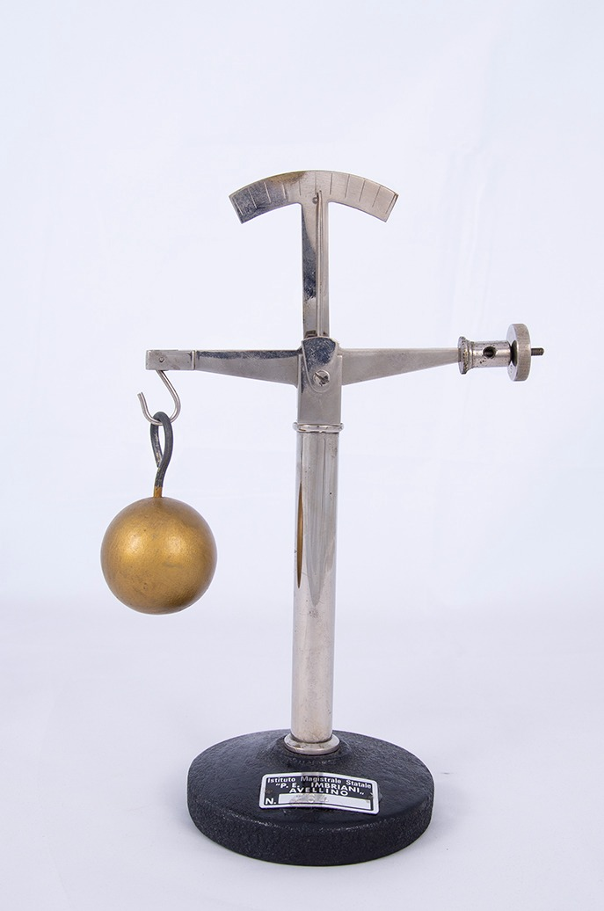

Baroscopio

Scuola di provenienza: Liceo Statale "P.E. Imbriani", Avellino
Settore: Meccanica
Costruttori: Sconosciuto
Materiali: Ottone
Accessori: Nessuno
Stato di conservazione: Buono
Descrizione: E' possibile dimostrare, con questo strumento, la spinta aerostatica (di Archimede). L’apparato consiste in una bilancia a giogo mobile munita d'indicatore e scala graduata. Il giogo sorregge ad una estremità una massa cava di grande volume, in questo caso un cilindro d'ottone verniciato, rispetto al contrappeso presente all'altra estremità del giogo e la cui distanza dal fulcro può essere variata o facendola scorrere o ruotandola nel caso in cui essa sia fissata per mezzo di un accoppiamento vite - madrevite, com'è in questo apparato. In condizioni normali i pesi dei due corpi si fanno equilibrio, con apposita taratura. Ma se l'apparato lo si pone sotto la campana di una macchina pneumatica e si fa un vuoto sempre più spinto, si può osservare che il giogo della bilancia si inclina dal lato della massa più voluminosa ovvero dal lato del cilindro cavo.